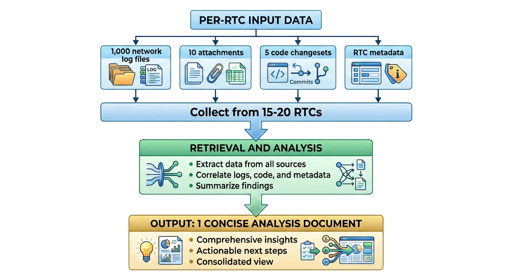
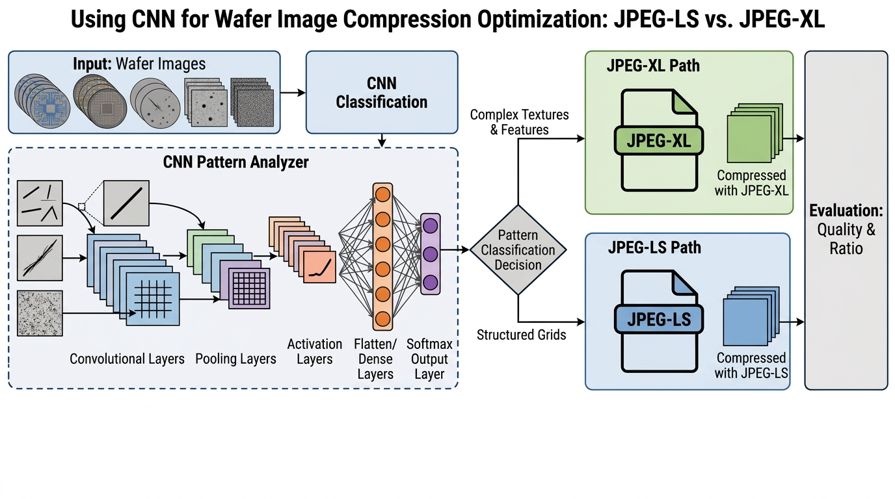
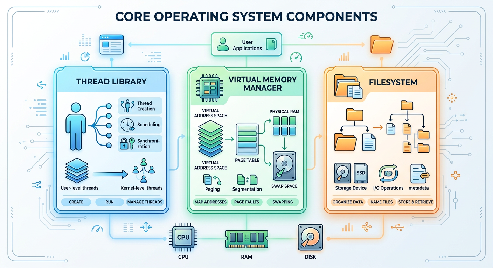

PORTFOLIO
Selected projects
Selected work from my KLA internships and operating-systems coursework.

KLA · AI / ML
Agentic Bug Diagnosis Workflow
An agentic retrieval-augmented generation workflow built to diagnose software bugs using approximately 70,000 historical bug reports and their resolutions.
- Created a semantic-search PostgreSQL database for resolved issues.
- Built an MCP server for low-latency retrieval of similar bugs and solutions.
- Reduced bug-triage investigation from hours or days to minutes.

KLA · COMPUTER VISION
Wafer Image Compression Predictor
A CNN-based ML application that predicts the optimal compression format for high-resolution wafer images, helping identify opportunities to reduce storage.
- Trained a convolutional neural network using Keras and TensorFlow.
- Compared compression-format choices across wafer-image data.
- Identified potential storage savings of hundreds of terabytes.

SYSTEMS · C++
Major OS Component Design
A collection of operating-systems components developed as part of advanced OS coursework. The work focused on concurrency, scheduling, virtual memory, filesystem design, synchronization, and rigorous testing.
- Thread library with threads, mutexes, and condition variables.
- Scheduler designed for single- and multi-CPU applications.
- Pager supporting swap-backed and file-backed virtual pages.
- Concurrent socket-served filesystem with reader/writer synchronization.